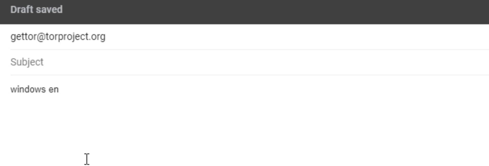
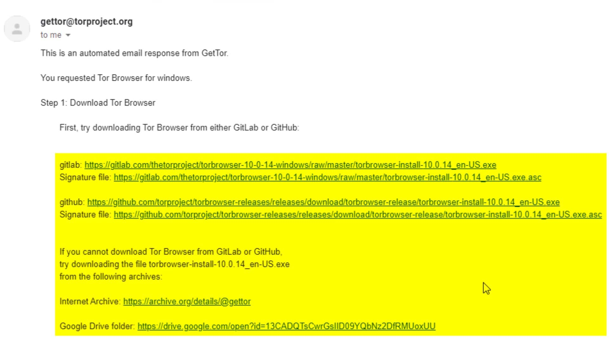

Download via Email
If in any way you can't access Tor browser download sources with the previous methods, just send an e-mail to gettor@torproject.org .
For example, if I want to download the English version of tor browser for windows, I just need to send the "windows en" message. You can write "osx" or "linux" instead of windows and also specify the abbreviation of your preferred language pack.

For example, if you want Tor Browser for Macos in Arabic you can send "osx ar" message.
As you can see, I soon received the download links in response, including many alternative ways.

Now all I have to do is download the setup file and signature file from here. Depending on the density, the response message may be slightly delayed for you. So even if you don't get an immediate response, it's okay.
All these methods and addresses that I have explained so far may change over time for different reasons. In such a case, you should check out the download guide on the Tor official website. You can easily read many documents and guides as it already has your native language support. In addition, you can ask me questions about the course at any time from the question-answer field at the point where you have problems.
There may be some of you wondering, or even critic, why I have just explained a simple download at such length. The reason for this situation is in the structure of the Tor project. Since the Tor project has always struggled with censorship by nature, it has always had to create alternative ways. I have explained it this lengthy because I think it will be useful for you to know alternative ways to access sources in all situations.
Ultimately, you learned how you can obtain the files you need to download for the installation process, including alternative ways. Before installing the browser, you need to verify the setup file.
But why do we need to verify setup file? Were the sources we used not already the official sources of the tor project?
Let's answer this question in the next lecture.